Fantasy Quest — Interfaz final
Versión final (V3) · 22 de noviembre de 2026
Documenta todas las escenas de la versión entregada: qué muestra cada una, sus controles, a dónde lleva y qué recursos visuales usa. El historial de diseño anterior está en UI-Desing-History/V1 y UI-Desing-History/V2.
Lineamientos visuales
Estilo inspirado en warcraftcn-ui (licencia en ui/LICENCIA_warcraftcn.md). Todo lo aplica Tema.Aplicar(form) en el constructor de cada formulario, así que ningún formulario define colores propios.
| Elemento | Valor |
|---|---|
| Tamaño de ventana | 800 × 500 px de contenido + 32 px de barra de título propia |
| Fuente | Palatino Linotype (1 pt más que en el diseñador) |
| Fondo | fondo.png estirado, color base madera #18120D |
| Títulos (labels ≥ 18 pt) | Dorado #F0C65A |
| Texto general | Pergamino #E8D8B0 |
| Texto sobre pergamino | Tinta #1E1006 |
| Botones | boton.png con corte de 9 partes (border-image); brillo 125 % con el mouse encima y 75 % al presionar; foco con marco dorado |
| Entradas de texto | entrada.png como marco, fondo #2C2219 |
| Paneles | contenedor.png (pergamino); un panel dentro de otro queda transparente y solo recorta |
| Grillas | Fondo madera, encabezado dorado, selección azul #1C3A82 |
| Sliders | Riel #5A3C1E, pieza dorada #F0C65A, borde #6E4614 (BarraDesplazamiento y BarraVolumen) |
| Fondo | Botón | Entrada | Contenedor |
|---|---|---|---|
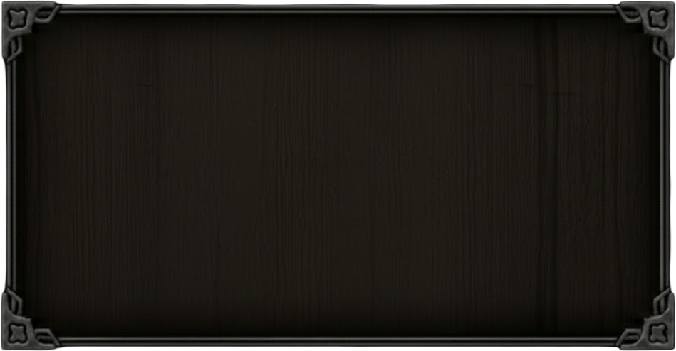 |
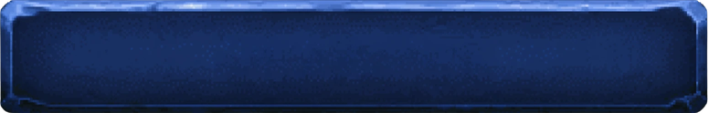 |
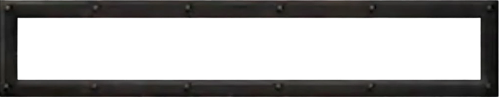 |
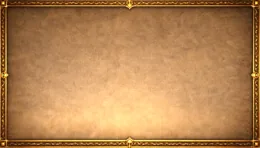 |
Mapa de navegación
La navegación es por capas (Navegador): cada pantalla se abre modal en la misma posición y tamaño que la anterior, que queda oculta. ← Atrás siempre es Close() y vuelve a mostrar la capa de abajo. Ajustes → Volver al menú principal cierra capa por capa hasta FrmPrincipal. La ✕ de la barra sale de toda la app.
FrmPrincipal (menú principal)
├── Registrarse / Iniciar sesión ──► FrmIngreso ──► FrmMenuJugador
│ └── Iniciar / Continuar ──► partida
├── Jugar anónimo ─────────────────────────────────────────────────────────────► partida
├── Scoreboard ──► FrmScoreboard ──► FrmResultado ──► FrmPuntajes
└── Salir
partida:
FrmPartida ──► FrmIntroduccion (capítulo N) ──► pregunta N ──► … ×15
└── al terminar ──► [anónima: ¿registrarse? ──► FrmIngreso]
└──► FrmResultado (canción final) ──► FrmPuntajes
Solo en Debug: FrmDesarrollo ──► acceso directo a cada pantalla
Componentes comunes
Barra de título (BarraTitulo)
Reemplaza la barra de Windows (el formulario queda sin borde y crece 32 px; todo el contenido baja). Muestra el Text del formulario a la izquierda y los botones minimizar y cerrar a la derecha. Arrastrar en cualquier punto libre mueve la ventana (WM_NCLBUTTONDOWN + HTCAPTION). Un marco fino de 1 px rodea la ventana.
| Control | Comportamiento |
|---|---|
| Zona de título | Arrastrar mueve la ventana |
| — | Minimiza. Fondo #3C2E20 con hover |
| ✕ | Sale del juego (Environment.Exit). Con una FrmPartida abierta pide confirmación. Fondo rojo #961E14 con hover |

Menú Ajustes (MenuSettings)
Botón Ajustes de 110 × 35 px arriba a la izquierda, que despliega un panel de 300 × 210 px con las barras Música y Narración y el botón Volver al menú principal. Está en FrmMenuJugador, FrmIntroduccion y FrmPartida. Al abrirse resincroniza los valores con los del menú principal. FrmPrincipal no lo tiene porque sus sliders están fijos en pantalla.
UI-Desing-History/V3/02-ajustes.pngCuadros de diálogo
Se usan los MessageBox estándar de Windows (sin tema) para avisos y confirmaciones. Los errores pasan siempre por Mensajes.MostrarError, que distingue regla de negocio de un SP (aviso), error de MySQL, regla de C# y error inesperado.
| Mensaje | Dónde aparece | Botones |
|---|---|---|
| No hay conexión con la base de datos… | Al abrir el menú principal sin BDD | Aceptar |
| Estás en medio de una partida. ¿Salir del juego? | ✕ con una partida abierta | Sí / No |
| Es una partida anónima: si salís se pierde el progreso… | Atrás o Volver al menú en partida anónima | Sí / No |
| ¿Abandonar la partida pendiente? Se pierde el progreso. | Menú del jugador | Sí / No |
| ¡Terminaste la partida! ¿Querés registrarte para guardarla? | Fin de partida anónima | Sí / No |
| Partida guardada a nombre de \<nombre> | Después de registrarse desde el fin de partida | Aceptar |
| Nombre inválido / Contraseña inválida / Contraseña incorrecta | FrmIngreso | Aceptar |
| Elegí una partida de la lista. | Scoreboard sin selección | Aceptar |
UI-Desing-History/V3/03-dialogos.pngEscenas
4. Menú principal — FrmPrincipal
Primera pantalla de la versión Release. Al mostrarse prueba la conexión con la BDD y avisa si falla.
| Control | Tipo | Acción |
|---|---|---|
| lblTitulo / lblSubtitulo | Label | "Fantasy Quest" / "¿Qué serías en un mundo medieval de fantasía?" |
| btnRegistrarse | Button | FrmIngreso (Registro) → FrmMenuJugador |
| btnLogin | Button | FrmIngreso (Login) → FrmMenuJugador |
| btnAnonimo | Button | Partida anónima |
| btnScoreboard | Button | FrmScoreboard |
| btnSalir | Button | Cierra la app |
| barraMusica / barraNarracion | BarraVolumen | Volumen 0–100 % de cada canal, con su label "Música: N%" / "Narración: N%" |

5. Registro — FrmIngreso (modo Registro)
Título "Registrarse", botón "Registrarme". Valida en C# antes de ir a la base: nombre de 2 a 30 caracteres (letras con acentos y ñ, números y espacios simples, con trim) y contraseña de 4 a 30 caracteres con PasswordChar. La contraseña se manda como SHA-256 a sp_registrar_jugador.
| Control | Tipo | Acción |
|---|---|---|
| txtNombre | TextBox | Nombre del jugador |
| txtContrasena | TextBox | Contraseña (enmascarada) |
| btnAceptar | Button | Valida y registra; cierra con DialogResult.OK |
| btnAtras | Button | Vuelve sin registrar |

6. Iniciar sesión — FrmIngreso (modo Login)
Misma ventana con título "Iniciar sesión" y botón "Entrar". Compara el hash en C#: nombre inexistente → aviso informativo; hash distinto → "Contraseña incorrecta.".
UI-Desing-History/V3/06-login.png7. Menú del jugador — FrmMenuJugador
Saludo "Hola, \<nombre>". Al cargar consulta fn_partida_pendiente y cambia según el estado. Incluye Ajustes.
| Estado | lblEstado | btnJugar | btnAbandonar |
|---|---|---|---|
| Sin partida pendiente | (vacío) | "Iniciar" | Oculto |
| Con partida pendiente | "Tenés una partida sin terminar." | "Continuar" | Visible → sp_cancelar_partida |
← Atrás cierra la sesión y vuelve al menú principal.
UI-Desing-History/V3/07a-menu-jugador.pngUI-Desing-History/V3/07b-menu-jugador-pendiente.png8. Introducción del capítulo — FrmIntroduccion
Se abre antes de cada pregunta. Reproduce Narracion-N.mp3 al mostrarse y la corta al cerrarse. Incluye Ajustes.
| Control | Tipo | Acción |
|---|---|---|
| lblCapitulo | Label | "Capítulo N de 15" |
| lblTitulo | Label | Título del capítulo (Pregunta.Titulo) |
| pnlHistoria → pnlTexto → lblHistoria | Panel / Label | Pergamino con la historia; pnlTexto recorta el texto |
| barraHistoria | BarraDesplazamiento | Visible solo si el texto no entra; también responde a la rueda del mouse |
| btnSonido | Button | "Silenciar" / "Activar sonido" (solo narración, persiste entre capítulos) |
| btnContinuar | Button | "Continuar →": cierra y deja ver la pregunta |
UI-Desing-History/V3/08-introduccion.png9. Pregunta — FrmPartida
Muestra "Pregunta N de 15", el texto de la pregunta y una grilla de 6 botones de respuesta (se ocultan los que sobran). Toda la lógica está en GestorPartida. Al responder la última muestra "Calculando resultado..." y finaliza. Incluye Ajustes.
| Control | Tipo | Acción |
|---|---|---|
| lblProgreso | Label | "Pregunta N de 15" |
| lblPregunta | Label | Texto de la pregunta |
| btnRespuesta1…6 | Button | Mismo handler; guarda la respuesta y abre la siguiente introducción |
| btnAtras | Button | Registrada: sale sin preguntar. Anónima con progreso: pide confirmación |
UI-Desing-History/V3/09-partida.png10. Resultado (fin de partida) — FrmResultado
Suena ending song.mp3 mientras está abierta. Título "Tu resultado" (anónima) o "Resultado de \<nombre>".
| Control | Tipo | Contenido / acción |
|---|---|---|
| pbAvatar | PictureBox | Tema.ComponerAvatar: imagen de la raza (pura o mestiza) al 60 % centrada + marco de la raza principal |
| pbClase | PictureBox | Ícono de la clase |
| lblCombinacion | Label | Raza resultante con mayúscula inicial |
| lblDetalle | Label | Raza principal, raza secundaria y clase |
| btnPuntajes | Button | FrmPuntajes |
| btnVolverAJugar | Button | DialogResult.Retry: vuelve al menú principal (cierra sesión) |
| btnAtras | Button | Vuelve a donde empezó la partida |
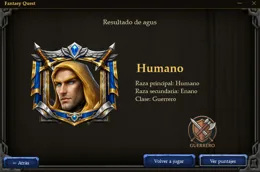
11. Resultado desde el scoreboard — FrmResultado
Misma ventana con finDePartida = false: sin "Volver a jugar" y sin canción final. Los datos salen de vw_historial y puntajes_partida.
UI-Desing-History/V3/11-resultado-scoreboard.png12. Puntajes — FrmPuntajes
Título "Tus puntajes" o "Puntajes de \<nombre>". Dos grillas, dgvRazas (4 filas) y dgvClases (13 filas), ordenadas por puntos de mayor a menor.
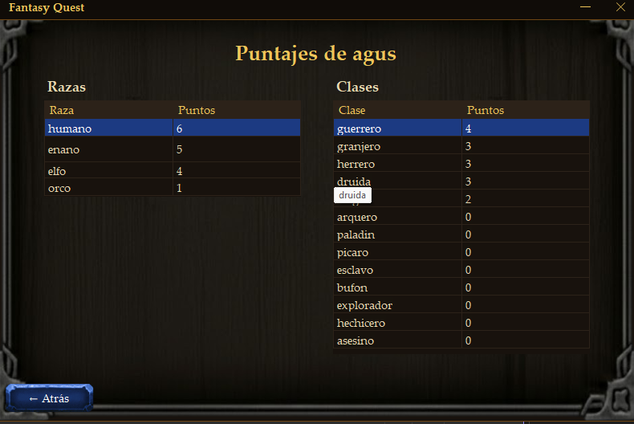
13. Scoreboard — FrmScoreboard
Grilla dgvPartidas con las partidas FINALIZADA de vw_historial: Jugador, Resultado, Clase y Fecha, la más reciente primero (la columna id_partida queda oculta). Ver resultado o doble clic abre la escena 11.
UI-Desing-History/V3/13-scoreboard.png14. Menú de desarrollo — FrmDesarrollo (solo Debug)
Arranca en lugar de FrmPrincipal cuando se compila en Debug. Muestra el estado de conexión y accesos directos: flujo completo, registro, login, menú del jugador con el usuario de prueba "Aragorn", partida anónima, resultado de ejemplo sin base y scoreboard. No forma parte del juego entregado.
UI-Desing-History/V3/14-desarrollo.pngRecursos del resultado
Los avatares se componen en tiempo de ejecución: imagen de la raza resultante + marco de la raza principal (el enano usa marco_default.png).
Razas puras
| Humano | Elfo | Orco | Enano |
|---|---|---|---|
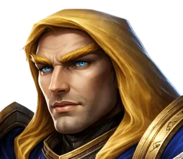 |
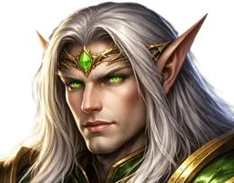 |
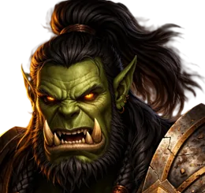 |
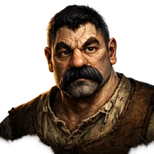 |
Razas mestizas
| Semiorco | Semielfo | Enano con gigantismo |
|---|---|---|
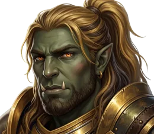 |
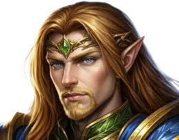 |
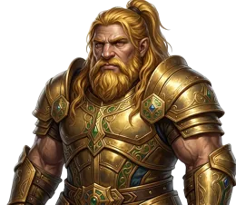 |
| Elfo del yunque | Elfo oscuro | Rompemontaña |
|---|---|---|
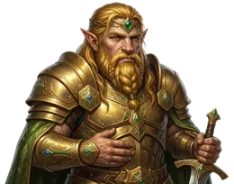 |
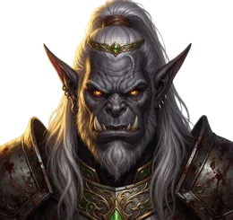 |
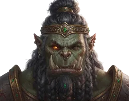 |
Marcos
| Humano | Elfo | Orco | Default (enano) |
|---|---|---|---|
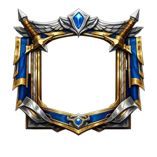 |
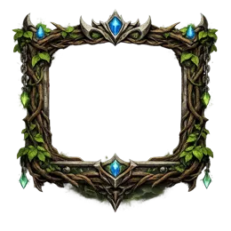 |
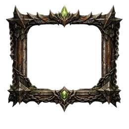 |
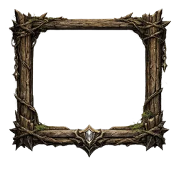 |
Íconos de clase
| Arquero | Paladín | Pícaro | Guerrero | Mago |
|---|---|---|---|---|
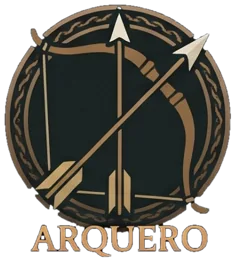 |
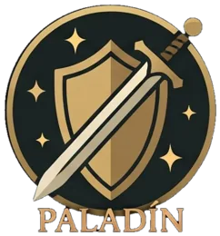 |
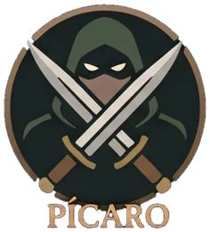 |
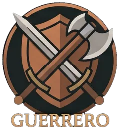 |
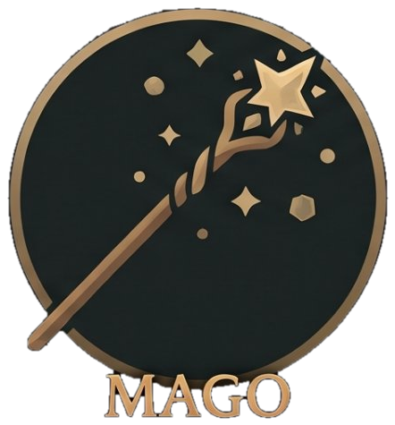 |
| Granjero | Esclavo | Herrero | Bufón |
|---|---|---|---|
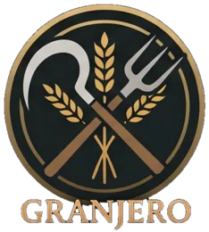 |
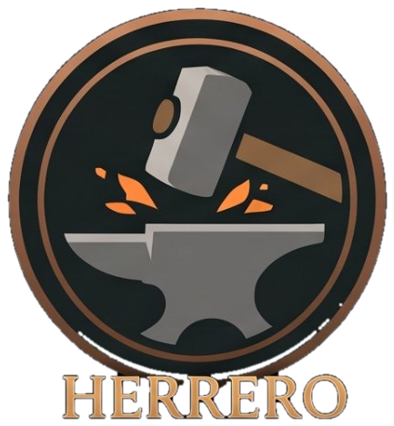 |
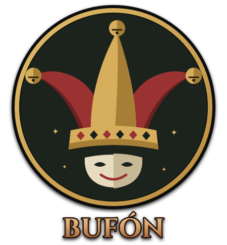 |
| Explorador | Druida | Hechicero | Asesino |
|---|---|---|---|
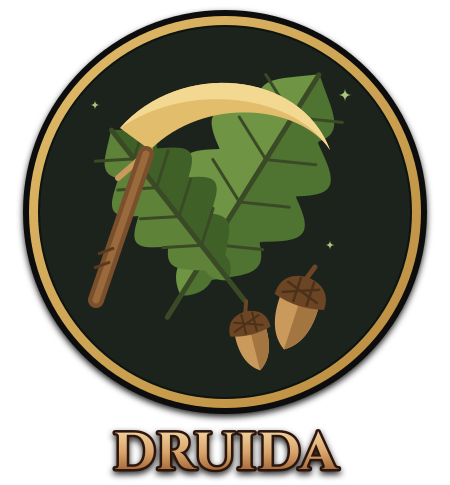 |
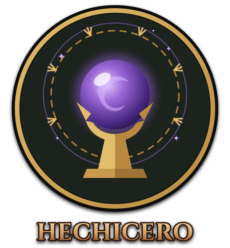 |
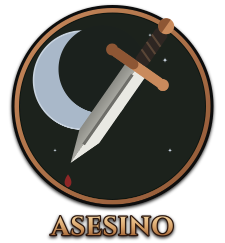 |
Audio
Canal (Sonido) |
Archivo | Cuándo suena |
|---|---|---|
| Musica | standard sound.m4a (en bucle) |
Desde que abre el juego, en todas las pantallas |
| Musica | ending song.mp3 |
Mientras está abierto el resultado de fin de partida |
| Narracion | Narracion-1.mp3 … Narracion-15.mp3 |
En la introducción de cada capítulo |
Los audios van embebidos en el exe y se copian a %TEMP%\Fantasy_quest la primera vez, porque el MediaPlayer de WPF solo abre archivos. No hay pausa: solo volumen, silencio de la narración y corte al cerrar la introducción (la pausa está en la lista de features pendientes).